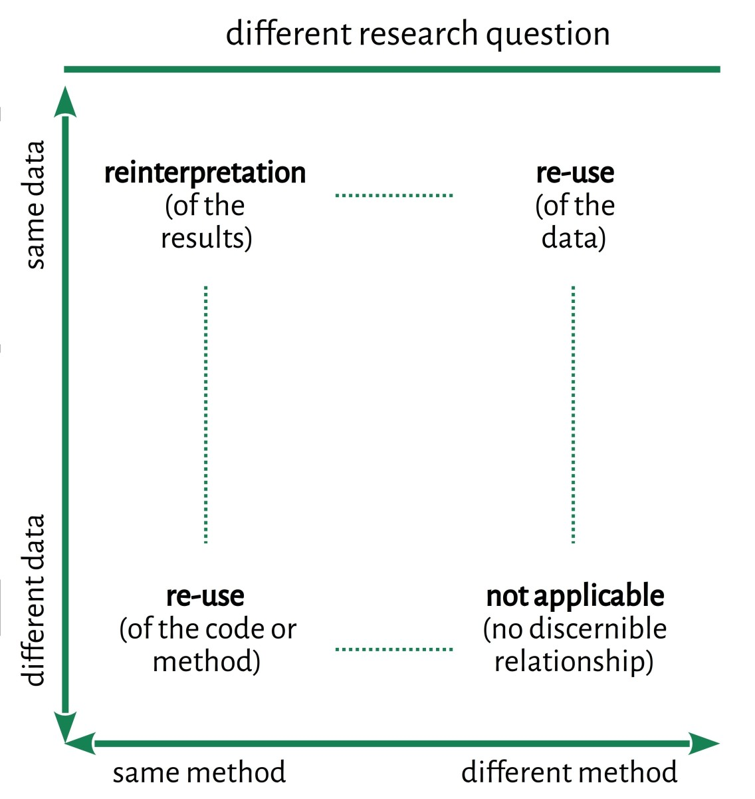
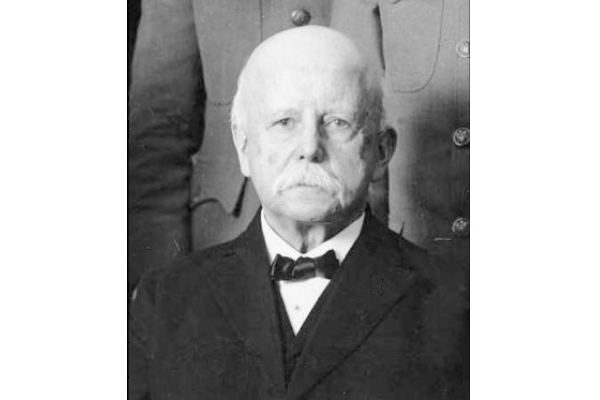
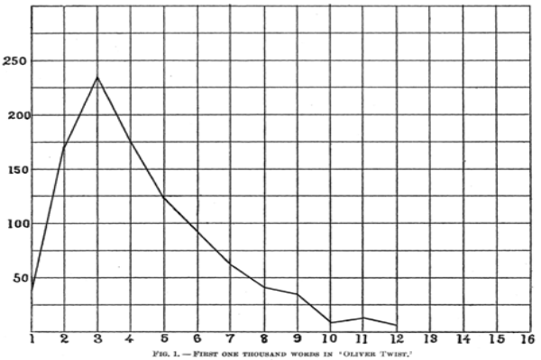
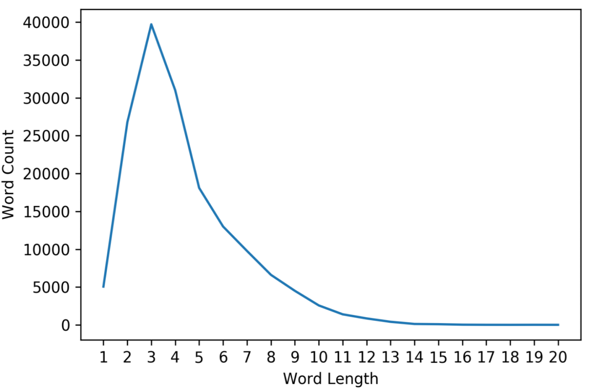
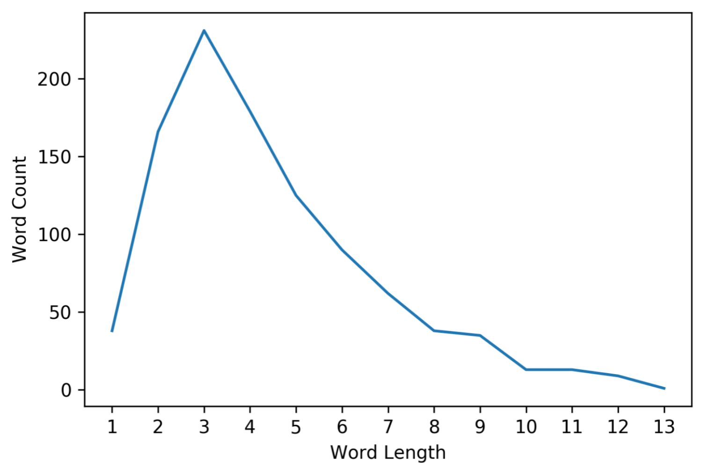
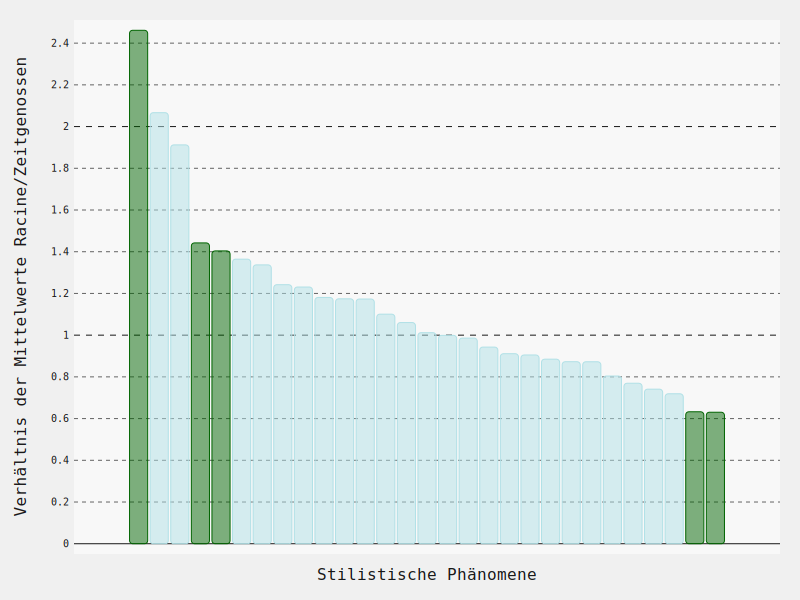

<br/> ### A Typology of Reproducible Research:<br/>Concepts, Terms, Examples <br/> <hr/> <br/>Christof Schöch (Trier) <br/><br/> <hr/> <p><strong>slides: <a href="https://dh-trier.github.io/trr/#/">dh-trier.github.io/trr/</a></strong></p> <p><strong><emph>Reproducible Research, Leiden University Library, April 29, 2021</strong></p> <hr/> :: - Note that I use "repeating research" as a neutral umbrella term - RR = any research that repeats an earlier study -- ## (1) What is Reproducible / Repeating Research? --- ### Repeating Research in Context <br/> <font size="+4"> meta-studies <br/> <br/> <br/> shared tasks evaluation <br/> <br/> <br/> <strong>repeating research</strong> <br/> <br/> <br/> peer-review Open Science <br/> <br/> <br/> transparency benchmarking </font> :: - RR is related to, but distinct from the other areas - RR has Several perspectives - (a) Retrospective: What kind of repetition has been done (replication, reproduction, etc. - (b) Prospective: Can the results of a study be repeated (replicability, reproducibility, etc.) --- ### Why does Repeating Research matter? * Why is it relevant? <!-- .element: class="fragment" data-fragment-index="1" --> * Relates to issues of trust and reliability of research * Relates to generalizability and robustness of research * Why is it timely? <!-- .element: class="fragment" data-fragment-index="2" --> * Recently, repeatability of research has come to be questioned * First in biomedicine and psychology * More recently also in ML, NLP and DH :: - Basic idea: corroboration of results through multiple studies - This has proved to be more difficult than expected, in: Biomedicine, Biology, Psychology, etc. (and CLS, recently) - In the humanities, we usually use "intersubjective plausibility", supported by clear argumentation and representative, supporting examples. - In Digital Humanities, because it works with code and data, this has shifted: - (a) Clear argumentation needs to be supplemented by executeable code - (b) And representative examples are replaced by charts summarizing the results - This is why RR now becomes important also in DH -- ## (2) A Typology of Repeating Research :: - The terminology is actually quite confusing, with a range of terms: - Replicability, reproducibility, re-analysis, - I believe that a first step in a better understanding of repeating research is clear terminology - Such a terminology should be grounded in a clear understanding of the conceptual structure of the problem - Advantage of a typological and conceptual approach: the labels become secondary (labels are source of confusion) - Important to me: conceptual typology, with labels that are ultimately exchangeable --- #### A 3-dimensional concept space <img height="500" data-src="img/trr-cube.jpg"> :: - Three (four) key dimensions - research question - method (sometimes distinct: implementation) - dataset used - In the sciences, there is sometimes a 4th dimensions: person / team / lab - Each dimension can be identical, more or less similar, different --- #### Typology (same research question) <img height="500" data-src="img/replication-typology-a.jpg"> --- ### Same method, same data - Proposed term: replication (of the experiment) - Function: quality check - New knowledge: little - Requirements: very high<br/>(code and data need to be available) --- ### Same method, different data - Proposed term: reproduction (of the results) - Function: check generalizability of method - New knowledge: yes, supports generalization - Requirements: high<br/>(code needs to be available) --- ### Different method, same data - Proposed term: re-analysis (of the data) - Function: check robustness of results - New knowledge: yes, shows robustness - Requirements: high<br/>(data needs to be available) --- #### Typology (different research question)  :: - We'll skip this today. - The relationship between earlier and later study is necessarily looser, here. - Less controversial, because the results don't need to be similar. -- ## Examples --- ### Example from CLS: Mendenhall  <!-- .element: class="fragment" data-fragment-index="1" -->  <!-- .element: class="fragment" data-fragment-index="2" --> <br/> <!-- .element: class="fragment" data-fragment-index="4" -->  <!-- .element: class="fragment" data-fragment-index="3" --> <p><small>Stéfan Sinclair and Geoffrey Rockwell: Epistemologica, 2015-2019, <a href="https://github.com/sgsinclair/epistemologica/">https://github.com/sgsinclair/epistemologica/</a>, repeating T. C. Mendenhall's "The Characteristic Curves of Composition" (1887). </small></p> :: - A take-away for me when practicing RR has been that exact replication of an experiment is useful, but not terribly exciting; it becomes more interesting, and more of a learning opportunity, when you introduce slight differences; modify code; re-implement the methode; new dataset, etc. --- ### Example from CLS: Spitzer <a href="img/signifikanz.svg"></a> <br/><small>Schöch (2021) repeating Spitzer (1928) on Racine (17th-century)</small> :: - Again, typical of CLS repeating research: analog/digital divide - Here, several types of repeating research combined - Starts out as relatively strictly reproducing research (but across the digital divide) - Then the dataset is changed (larger dataset, comparison authors) - Then the methods are changed as well: exploratory instead of "search"-based -- ## Conclusion --- ### Affordances of the Typology * Structure <!-- .element: class="fragment" data-fragment-index="1" --> * Structures the field of RR * Systematic relations between kinds of RR * Terminology <!-- .element: class="fragment" data-fragment-index="2" --> * Conceptual typology first, labels second * Terms have relational, differentiated meaning * Helps check the meaning of a term in use * Supports translating terminology between communities * Practice <!-- .element: class="fragment" data-fragment-index="3" --> * What needs to be provided to enable specific type of RR? * Clarity on what to expect from a given RR study * Helps identify similar studies across disciplines --- ### A way forward for DH/CLS? * Strategy <!-- .element: class="fragment" data-fragment-index="1" --> * Typology helps establish RR as part of DH * Shows how essential Open Science is! * Who is concerned by RR? <!-- .element: class="fragment" data-fragment-index="2" --> * An individual effort: routinely make code and data available * A community effort: organize a joint, continual replication process * How to support RR? <!-- .element: class="fragment" data-fragment-index="3" --> * Help make papers repeatable: Establish reporting standards for RR * Support practice of RR: Establish a RR publication category * Create incentives for RR: e.g. best RR paper award --- ### Recommended Readings <small> * Huber, Eva, and Çağrı Çöltekin, ‘Reproduction and Replication: A Case Study with Automatic Essay Scoring’, in Proceedings of the 12th Language Resources and Evaluation Conference (presented at the LREC 2020, Marseille, France: European Language Resources Association, 2020), pp. 5603–13 <https://www.aclweb.org/anthology/2020.lrec-1.688> [accessed 21 February 2021] * Peng, Roger, ‘The Reproducibility Crisis in Science: A Statistical Counterattack’, Significance, 12.3 (2015), 30–32 <https://doi.org/10.1111/j.1740-9713.2015.00827.x> * Plesser, Hans E., ‘Reproducibility vs. Replicability: A Brief History of a Confused Terminology’, Frontiers in Neuroinformatics, 11 (2018) <https://doi.org/10.3389/fninf.2017.00076> * Romero, Felipe, ‘Philosophy of Science and the Replicability Crisis’, Philosophy Compass, 14.11 (2019), e12633 <https://doi.org/10.1111/phc3.12633> * Da, Nan Z., ‘The Computational Case against Computational Literary Studies’, Critical Inquiry, 45.3 (2019), 601–39 <https://doi.org/10.1086/702594> * Open Science Collaboration, ‘Estimating the Reproducibility of Psychological Science’, Science, 349.6251 (2015) <https://doi.org/10.1126/science.aac4716> </small>